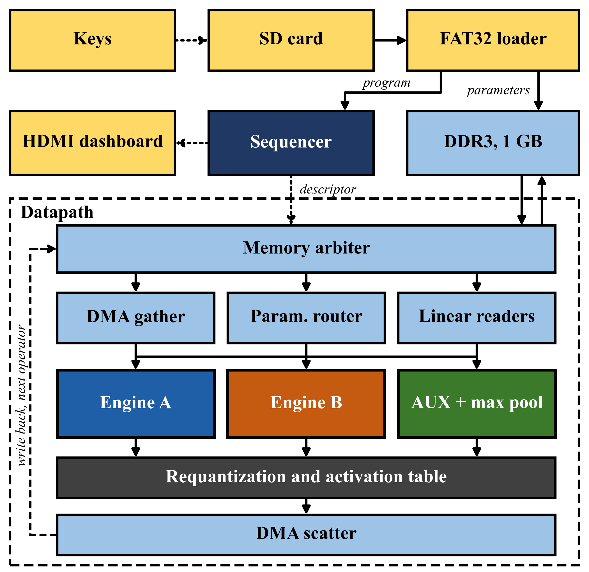
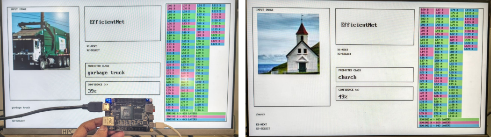

SQA-Arc: Sensitivity-Driven Quantization and Its FPGA Hardware
A framework that compresses deep neural networks into ternary and 4-bit engines chosen by layer sensitivity, built as a working FPGA accelerator that runs ten networks from one bitstream.

Overview
Most quantization research is evaluated only in software, so its hardware cost stays unknown. SQA-Arc closes that gap in two stages.
Software framework. SQA-Arc measures how sensitive each layer is with a Fisher information trace. Less sensitive layers go to Engine A, which uses ternary weights {−α, 0, +α} and replaces multiplication with addition and subtraction. More sensitive layers go to Engine B, which uses 4-bit weights. Training also prunes each ternary neuron to at most 12 inputs, so the hardware can process it in a short, fixed loop. The framework was evaluated on 12 network architectures and two image datasets.
Hardware. SQA-Core is a fixed-function overlay on an AMD Artix-7 FPGA. A compiler turns each network into a program of 256-bit descriptors, which a hardware sequencer executes. Ten networks, from MCUNet-style to ResNet-18, are stored on one SD card and run on the same bitstream. No DSP block computes a weight-activation product. EfficientNet-B0 has run on the physical board and shows its results on a live HDMI dashboard.
Goals
- Give each layer the cheapest arithmetic it can tolerate, using a measured sensitivity score.
- Replace the multiplications of low-sensitivity layers with addition and subtraction.
- Limit each ternary neuron to 12 inputs during training, so that the networks fit FPGA hardware.
- Show that the method works across many architectures, from tiny mobile networks to ResNet-18.
- Build the framework as a real FPGA accelerator, and measure its area, timing and power.
- Run many networks on one hardware configuration, loaded from an SD card.
Key Achievements
- 10 networks on one bitstream, selected from one SD card with two push buttons
- 100 MHz in 20,845 LUTs, which is 15.58% of an Artix-7 XC7A200T
- No DSP block on any weight-activation product; the design's 22 DSP blocks perform only address arithmetic
- 2.20 bits per parameter, 3.64× smaller than 8-bit storage
- 79.49% to 91.01% integer top-1 accuracy on the Imagenette validation split, against a floating-point mean of 89.06%
- Whole-network RTL simulation matches the integer reference at every operator of all ten networks
- Running on the physical board: EfficientNet-B0 classifies live images and shows the results on HDMI
- Custom instruction format of 256-bit descriptors with 11 opcodes, with its own compiler

Results
| Network | FP32 top-1 (%) | On-hardware integer top-1 (%) | Latency (ms)* |
|---|---|---|---|
| EfficientNet-B0 | 92.20 | 91.01 | 2,858 |
| DeepShift-style | 90.50 | 89.38 | 10,900 |
| ShuffleNetV2 | 91.41 | 88.89 | 2,786 |
| BNN | 85.66 | 86.06 | 5,385 |
| ShiftNet | 89.32 | 85.40 | 3,819 |
| ResNet-18 | 89.96 | 84.36 | 7,149 |
| GhostNet-lite | 90.42 | 83.29 | 1,243 |
| ResNet-8 | 86.68 | 83.01 | 3,846 |
| SqueezeNet | 85.12 | 79.67 | 1,692 |
| MCUNet-style | 89.38 | 79.49 | 509 |
*From whole-network RTL simulation at 100 MHz with a DDR3 memory model; not timed on the board. Accuracy is on the Imagenette validation split (a 10-class subset of ImageNet). MCUNet-style, GhostNet-lite, DeepShift-style and BNN are adapted versions, not the original networks.
Power and bottleneck. On-chip power is 1.473 W in the post-route estimate. The DDR3 memory controller takes 73.8% of the dynamic power, while the two compute engines draw only 22 mW. In the mobile networks, fetching input windows from memory costs more than the arithmetic. A larger cache and a line buffer are projected to bring EfficientNet-B0 from 2,858 ms to about 870 ms.
Publications
Papers from this project, in the order they were written.
- A. H. Shawn and T. Titirsha, “Quantization-Aware Training for Efficient Edge DNN Deployment: A Sensitivity-Driven Approach,” 2026 Great Lakes Symposium on VLSI (GLSVLSI), Late Breaking Session. Accepted. The first proof of concept of SQA-Arc, on CIFAR-10. Not presented because of an error in the university's administrative process.
- Conference paper, International Conference on Computer and Information Technology (ICCIT), VLSI track. Submitted.
- A. H. Shawn, T. Titirsha and S. M. Saidur Rahman, “SQA-Arc: Sensitivity-Driven Quantization and Architecture Framework for Multiplier-Free Inference on Heterogeneous Deep Neural Networks,” Neural Computing and Applications (Springer). Under review.
- Conference paper on the SQA-Core FPGA overlay, IEEE Electron Devices Technology and Manufacturing Conference (EDTM 2027). Submitted.
- A. H. Shawn, T. Titirsha, H. U. Zaman, T. Rahman, A. Chakrabarty and A. B. M. Harun-Ur-Rashid, “SQA-Arc Hardware: A Fixed-Function FPGA Overlay for Sensitivity-Partitioned Dual-Engine Inference,” IEEE Transactions on Circuits and Systems II: Express Briefs. Being submitted.
- Review paper. In preparation.
Tools & Collaborators
| Tools | PyTorch · Brevitas · Optuna · Verilog · Vitis HLS · Vivado 2025.2 · AMD Artix-7 · DDR3 · Python compiler toolchain |
| Collaborators | Twisha Titirsha, Hasan U. Zaman, Amitabha Chakrabarty and A. B. M. Harun-Ur-Rashid (BRAC University); Touhidur Rahman (Neural Semiconductor) |
Next Steps
- A larger gather cache and a line buffer, projected to bring EfficientNet-B0 from 2,858 ms to about 870 ms.
- An on-board cycle counter, so latency can be measured on the hardware itself.